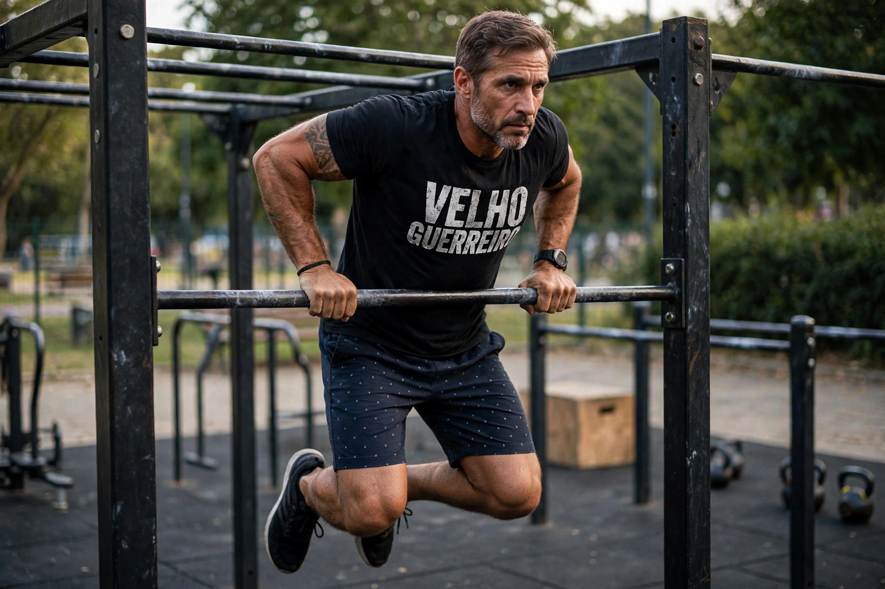

Treinando em Casa: Fazendo Barra Muscle Up Depois dos 40
Vídeo: Treino real em casa - Muscle Up sem frescura, só barra e disciplina
Não tem academia? Não tem desculpa. Hoje o treino foi em casa, na minha barra simples. Sem espelho, sem ar-condicionado. Só eu, a barra e a vontade de não perder pra mim mesmo.
Muita gente acha que muscle up é coisa de garoto de 20 anos da calistenia. Não é bem assim. Depois dos 40 anos você consegue fazer suas barras Muscle Up também, e faz melhor, porque tem cabeça madura. E o melhor de tudo: dá pra treinar em casa com uma barra só.

1. Por Que Treinar em Casa Funciona Melhor Depois dos 40 anos?
Academia é boa, mas tem 3 problemas pra quem passou dos 40: tempo perdido no trânsito, algumas pessoas tem vergonha de recomeçar do zero e excesso de exercício que podem causar lesões.
Em casa você tem controle total. Meu setup: uma barra fixa de parede, duas paralelas improvisadas e chão. Com isso eu faço 90% do meu treino e mantenho o muscle up em dia.
Além disso, em casa não tem desculpa de "hoje não deu pra ir". A barra tá lá. Chovendo, fazendo sol, 6h da manhã ou 21h da noite. É só levantar e fazer.
2. Por Que Short de Tactel Para Treinar em Casa?
Parece detalhe, mas não é. Short de tactel é o melhor para barra e muscle up.
- 1. Seca rápido: Treinando em casa você sua 3x mais. Tactel não encharca igual moletom.
- 2. Não prende na barra: Quando você faz a transição do muscle up, short largo trava. Tactel é leve e solto.
- 3. Conforto raiz: É o short do corredor, do lutador, do Velho Guerreiro. Sem frescura.
Por isso em todo vídeo meu você vai me ver de short de tactel e algumas vezes de camiseta do Velho Guerreiro. É meu uniforme de guerra.
3. Como Cheguei no Muscle Up Treinando em Casa?
Não foi do dia pra noite. Foram alguns meses de treinamento.
- 1. Base de barra fixa: 6 meses fazendo 8 a 12 barras limpas todo dia. Sem balanço, sem kipping. Se você não faz 10 barras limpas, esquece muscle up por enquanto. Volta e faz a base.
- 2. Mergulho na paralela: 3 séries de 15 repetições. Isso fortalece o tríceps que empurra você pra cima da barra depois da transição.
- 3. Transição com elástico: Esse é o segredo que ninguém te conta. Amarra um elástico na barra e treina só a virada do punho. Muscle up não é só força, é técnica de giro de punho.
O treino que fiz no vídeo (30 minutos)
Aquecimento (7 min): Mobilidade de punho, cotovelo e ombro. Depois 2 séries de 5 barras lentas. Depois dos 40, tendão frio não perdoa.
Bloco principal (20 min): 5 séries de 2 muscle ups limpos com 90 segundos de descanso. Entre as séries, 10 flexões + 20 agachamentos pra manter o coração alto.
Finalização: 3 séries de 10 segundos segurando em cima da barra. Isso cria força de sustentação.
4. O Que Mais Pega (dificulta) no Muscle Up Depois dos 40?
1. O cotovelo
Se você tenta fazer todo dia no começo, seu cotovelo inflama. Eu faço muscle up só 2x na semana. Nos outros dias, faço barra e flexão.
2. A cabeça
Você vai ter medo da transição. Vai achar que vai cair. A cabeça de quem tem 40+ é mais forte que a da garotada de 20 aninhos se você treiná-la vai dar certo. A regra de ouro aqui é: nunca tentar cansado. Muscle up se faz descansado.
Conclusão: Sua Academia é Sua Casa
Eu trabalho 10h por dia às vezes mais, tenho família, tenho site pra cuidar e ainda arrumo tempo pra treinar em casa. Se eu faço muscle up na minha barra simples, você também consegue fazer.
Comece hoje: 5 barras. Amanhã 6. Depois 10. Depois tenta a transição com elástico. Daqui 6 meses você me manda seu vídeo.
Essa é a vida real. Sem filtro. Sem academia top. Só barra, suor, short de tactel e disciplina.
Força e disciplina.
— Velho Guerreiro